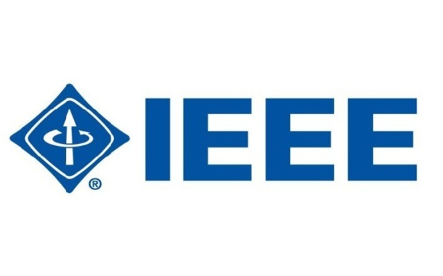

<div class="container mt-4">
    <div class="card shadow-lg border-0 rounded">
      <div class="row g-0">
        <!-- Imagen -->
        <div class="col-md-4">
          
        </div>
        <!-- Contenido -->
        <div class="col-md-8">
          <div class="card-body">
            <h2 class="card-title text-center text-primary">¿Para qué sirve la Norma IEEE 830?</h2>
            <p class="card-text mt-3">
              La <span class="fw-bold text-success">Norma IEEE 830</span> proporciona una guía detallada para la 
              elaboración de un <span class="fw-bold text-warning">Especificación de Requisitos de Software (ERS)</span>. 
              Esta norma es emitida por el <span class="fw-bold">Instituto de Ingenieros Eléctricos y Electrónicos (IEEE)</span> 
              y tiene como propósito establecer las características necesarias para que un documento de requisitos sea 
              claro, completo y de alta calidad.
            </p>
            <h5 class="mt-4 text-secondary">Propósitos principales de la Norma IEEE 830:</h5>
            <ul class="list-group list-group-flush">
              <li class="list-group-item">
                <strong class="text-info">1. Claridad:</strong> garantizar que los requisitos del software sean comprensibles 
                por todas las partes interesadas.
              </li>
              <li class="list-group-item">
                <strong class="text-info">2. Completitud:</strong> asegurar que todos los requisitos funcionales y no funcionales 
                estén documentados.
              </li>
              <li class="list-group-item">
                <strong class="text-info">3. Consistencia:</strong> evitar contradicciones en los requisitos especificados.
              </li>
              <li class="list-group-item">
                <strong class="text-info">4. Trazabilidad:</strong> permitir el seguimiento de cada requisito desde su 
                identificación hasta su implementación.
              </li>
              <li class="list-group-item">
                <strong class="text-info">5. Modificabilidad:</strong> facilitar la actualización del documento en caso de 
                cambios durante el ciclo de vida del proyecto.
              </li>
            </ul>
            <p class="card-text mt-3">
              La Norma IEEE 830 es ampliamente utilizada en proyectos de desarrollo de software, especialmente en aquellos 
              que requieren una comunicación efectiva entre desarrolladores, clientes y otras partes interesadas. 
              Un documento ERS bien elaborado siguiendo esta norma reduce riesgos de malentendidos y problemas 
              durante el desarrollo del proyecto.
            </p>
          </div>
        </div>
      </div>
    </div>
  </div>
  